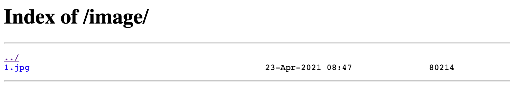
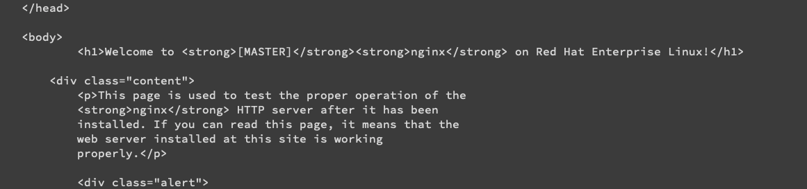
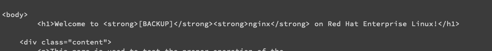
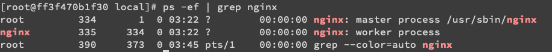

Nginx学习手册
概述
- Nginx (engine x) 是一个高性能的HTTP和反向代理服务器,特点是占有内存少,并发能力强.
- Nginx可以作为静态页面的web服务器,同时还支持CGI协议的动态语言,比如perl,php等.
- 但是不支持java. java程序智能通过与tomcat配合完成
- Nginx专为性能优化开发,性能是其最重要的考量,实现上非常注重效率,能经受高负载的考验,报告表明能支持50000个并发连接数
正向代理
如果把局域网外的Internet想象成一个巨大的资源库,则局域网中的客户端要访问Internet,则需要通过代理服务器来访问,这种代理服务就称为正向代理
反向代理
反向代理,其实客户端对代理是无感知的.因为客户端不需要任何配置就可以访问,我们只需要将请求发送到反向代理服务器,由反向代理服务器去选择目标服务器获取数据后,再返回客户端,此时反向代理服务器和目标服务器对外就是一个服务器,暴露的是代理服务器地址,隐藏了真实服务器IP地址
负载均衡
单个服务器解决不了性能问题, 所以我们增加服务器的数量,然后将请求分发到各个服务器上,将原先请求集中到单个服务器上的情况改为将请求分发到多个服务器上,将负载分发到不同的服务器,也就是我们所说的负载均衡.
动静分离
为了加快网页的解析速度,可以把动态页面和静态页面由不同的服务器来解析,加快解析速度.降低原来单个服务器的压力
安装(centOS8)
在nginx官网下载安装包上传至服务器
安装依赖
- pcre:
yum -y install gcc gcc-c++ autoconf make - 安装openssl,zlib:
yum -y install make zlib zlib-devel gcc-c++ libtool openssl openssl-devel - 一键安装:
yum -y install gcc zlib zlib-devel pcre-devel openssl openssl-devel
- pcre:
解压nginx包
进入解压之后的包中执行
./configuremake && make install检查/usr/local是否有nginx文件夹,有则表明安装成功
在nginx文件夹里,有sbin文件夹,进入文件夹,执行
./nginx查看进程
ps -ef | grep nginx
访问80端口,可以查看到网页
常用命令
前提: 进入到目录中 cd /usr/local/nginx/sbin
查看版本号
./nginx -v
启动nginx
./nginx
关闭nginx
./nginx -s stop
重新加载nginx
一般用于修改了nginx.conf配置文件后,无需重启服务器,重新加载
./nginx -s reload
nginx配置文件
配置文件位置
/usr/local/nginx/conf/nginx.conf
配置文件组成
全局块
- 从配置文件开始到events块之间的内容,主要会设置一些影响nginx服务器整体运行的配置指令,主要包括
- 配置运行nginx服务器的用户(组)
- 允许生成的worker process数
- worker_processes越大,可以支持的并发处理量也就越多
- 进程PID存放路径
- 日志存放路径,类型
- 配置文件的引入
- 从配置文件开始到events块之间的内容,主要会设置一些影响nginx服务器整体运行的配置指令,主要包括
events块
主要影响nginx服务器与用户的网络连接
常用的设置包括是否开启对多work process下的网络连接进行序列化,是否允许同时接受多个网络连接,选取哪种时间驱动模型来处理连接请求,每个work process可以同时支持的最大连接数等
events { worker_connections 1024; }1
2
3
4
5
6
7
8
9
10
11
12
13
14
15
16
17
18
19
20
21
22
23
24
25
26
27
28
29
30
31
32
33
34
35
36
37
38
39
40
41
42
43
44
45
46
47
48
49
50
51
52
53
54
55
56
57
58
59
* http块
* 配置最频繁的部分
* 代理,缓存,日志等绝大多数功能和第三方模块配置
* 分为http全局块和server块
* http全局块
* 指令包括文件引入,MIME-TYPE定义,日志自定义,连接超时时间,单链接请求数上限等
* server块
* 这块和虚拟主机有密切的关系. 虚拟主机从用户角度看,和一太独立的硬件主机是完全一样的, 该技术的产生是为了节省互联网服务器硬件成本
* 每个http块可以包括多个server块,每个server块就相当于一个虚拟主机
* 每个server块也分为全局server块,以及可以同时包含多个location块
* 全局server块
* 最常见的配置是本虚拟机的监听配置和本虚拟主机的名称或IP配置
* location块
* 一个server可以配置多个location块
* 这块的作用是基于nginx服务器接受到的请求字符串,对虚拟主机名称之外的字符串进行匹配,对特定的请求进行处理.
* 地址定向,数据缓存,应答控制还有诸多第三方模块的配置也在这里
## 配置实例
### 反向代理
#### 案例一
##### 实现效果
打开浏览器,在地址栏输入地址www.123.com,跳转到linux系统tomcat主页面
##### 实现
1. 服务器安装并启动tomcat, 在bin目录中,./startup.sh启动
2. 对外开放访问的端口:
1. ```firewall-com --add-port=8080/tcp --permanent```
2. ```firewall-cmd -reload```
3. 查看已开放的端口号: ```firewall-cmd --list-all```
3. 将www.123.com加入hosts,对应80端口
4. 在nginx中进行反向代理配置
```conf
server {
listen 80;
server_name localhost;
#charset koi8-r;
#access_log logs/host.access.log main;
location / {
root html;
proxy_pass http://127.0.0.1:8080;
index index.html index.htm;
}
访问可以看到已经生效
案例二
实现效果
访问http://127.0.0.1:9001/edu/ 直接跳转到127.0.0.1:8080/
访问http://127.0.0.1:9001/vod/ 直接跳转到127.0.0.1:8082/
实现
安装两个tomcat,在server.xml中修改启动端口号和connector中端口号即可
反向代理配置
~ 表示使用正则表达式
1
2
3
4
5
6
7
8
9
10
11server {
listen 9001;
server_name localhost;
location ~ /edu/ {
proxy_pass http://localhost:8001;
}
location ~ /vod/ {
proxy_pass http://localhost:8002;
}
}开放对外访问的端口号
重启或重新加载nginx
location指令说明
该指令用于匹配URL
语法:
1
2
3location [ = | ~ | ~* | ^~] uri {
}说明
- = 用于不含正则表达式的uri前,要求请求字符串于uri严格匹配,如果匹配成功,就停止继续向下搜索并立即处理该请求
- ~ 用于表示uri包含正则表达式,并且区分大小写
- ~* 用于表示uri包含正则表达式,并且不区分大小写
- ^~ 用于不含正则表达式的uri前,要求nginx服务器找到表示uri和请求字符串匹配度最高的location之后,立即使用此location处理请求,而不在用location块中的正则uri和请求字符串做匹配
- 注意: 如果uri包含正则表达式,则必须要有
或者*标识
负载均衡
实现效果
浏览器输入地址http:xxx/edu/a.html, 负载均衡效果,平均请求到8080和8081中
实现
准备两台tomcat服务器,一台8080,一台8081
在两台tomcaat里面的webapps目录中,创建名称为edu的文件夹,在文件夹中创建a.html文件
在nginx配置文件中配置负载均衡
1
2
3
4
5
6
7
8
9
10
11
12
13
14
15
16
17
18
19upstream myserver{
server localhost:8080;
server localhost:8081;
}
server {
listen 80;
server_name localhost;
#charset koi8-r;
#access_log logs/host.access.log main;
location / {
root html;
proxy_pass http://myserver;
index index.html index.htm;
}
...
}
nginx分配服务器策略
轮训
- 每个请求按时间顺序逐一分配到不同的后端服务器,如果后端服务器down掉,能自动剔除
weight 权重
weight代表权重,默认为1,权重越高,分配的客户端越多
1
2
3
4upstream myserver{
server localhost:8080 weight=10;
server localhost:8081 weight=10;
}
ip_hash
每个请求按访问的ip的hash结果分配,这样每个访客固定访问一个后端服务器
可以解决session的问题.
1
2
3
4
5upstream myserver{
ip_hash
server localhost:8080;
server localhost:8081;
}
fair 第三方
按照后端服务的响应时间来分配,响应时间短的优先分配
1
2
3
4
5upstream myserver{
server localhost:8080;
server localhost:8081;
fair
}
动静分离
动静分离简单来说就是把动态跟静态请求分开,从目前实现角度来讲大致分为两种
- 纯粹把静态文件独立成单独的域名,放在单独的服务器上,也是目前主流推崇的方案
- 动态和静态文件混合在一起发布,通过nginx来分开
- 通过location设置不同的后缀名来实现不同的请求转发.
- 通过expires参数设置,可以设置浏览器缓存过期时间,减少与服务器之间的请求和流量.
- 比如这里设置3d,表示3天之内访问这个URL,发送一个请求,比对服务器该文件最后更新时间有没有变化.
- 没有变化则不会从服务器抓取,返回状态码304
- 如果有修改,则直接从服务器重新下载,返回状态码200.
配置
在linux中准备静态资源
- image文件夹中有一张图片
- www文件夹中有一个网页
在nginx配置文件中进行
1
2
3
4
5
6
7
8
9
10
11
12
13
14
15
16
17
18server {
listen 80;
server_name localhost;
#charset koi8-r;
#access_log logs/host.access.log main;
location /www/ {
root /data/;
index index.html index.htm;
}
location /image/ {
root /data/;
autoindex on;
}
...
}打开网页xxx/image/可以看到

高可用
步骤
需要两台nginx服务器
可以使用docker开两个端口
docker run --privileged -itd -p mycentos:1.5 /usr/sbin/init在docker的centos上使用yum安装nginx
使用
whereis nginx查看目录修改index.html以区分服务器
在/usr/share/nginx中修改
<h1>Welcome to <strong>MASTER<strong>nginx</strong> on Red Hat Enterprise Linux!</h1>! Configuration File for keepalived1
2
3
4
5
6
7
8
9
10
11
12
13
14
15
16
17
18
19
20
5. yum安装的nginx配置文件在/etc/nginx中
> 以下是Nginx的默认路径：
> (1) Nginx配置路径：/etc/nginx/
> (2) PID目录：/var/run/nginx.pid
> (3) 错误日志：/var/log/nginx/error.log
> (4) 访问日志：/var/log/nginx/access.log
> (5) 默认站点目录：/usr/share/nginx/html
>
> 事实上，只需知道Nginx配置路径，其他路径均可在`/etc/nginx/nginx.conf` 以及`/etc/nginx/conf.d/default.conf` 中查询到。
6. 使用```systemctl start nginx```启动,```systemctl status nginx```,```systemctl restart nginx```
2. 需要keepalived
1. ```yum install keepalived -y```
2. 安装之后,在etc里面生成目录keepalived,有文件keepalived.conf配置文件
global_defs {
smtp_connect_timeout 30
router_id LVS_DEVEL
vrrp_skip_check_adv_addr
vrrp_strict
vrrp_garp_interval 0
vrrp_gna_interval 0
}
vrrp_script chk__http_port {script "/usr/local/src/nginx_check.sh" interval 2 #(check sh) weight 2}
vrrp_instance VI_1 {state MASTER interface eth0 virtual_router_id 51 priority 100 advert_int 1 authentication { auth_type PASS auth_pass 1111 } virtual_ipaddress { 172.17.0.200 }}
1
2
3
4
5
6
7
8
9
10
11
12
13
14
15
3. 配置文件中的脚本,检测nginx是否运行
1. 如果没有nginx,keepalived服务关闭
```bash
#!/bin/bash
A=`ps -C nginx -no-header | wx -l`
if [ $A -eq 0];then
/usr/local/nginx/sbin/nginx
sleep 2
if [`ps -C nginx --no-header | wc -l` -eq 0 ];then
killall keepalived
fi
fi
查看是否已经绑定虚拟ip:
ip a启动
systeml start nginxsysteml start keepalived
进入测试docker使用curl命令测试虚拟ip
curl 172.17.0.200发现是MASTER

模拟关闭主节点: 关闭keepalived:
systemctl stop keepalived进入测试docker使用curl命令测试虚拟ip
curl 172.17.0.200发现变成了BACKUP

成功!
keepalive配置文件
- global_defs 全局
- 主要关注router_id 后面加主机名
- vrrp_script 脚本
- 脚本运行
- script 脚本路径
- intervel 间隔时间
- weight -20 权重
- vrrp_instance VI_1 虚拟ip
- state 主机名
- interface 网卡
- virtual_touter_id 标识,主备机的virtual router id必须相同
- priority 主备机取不同的优先级,主机值较大,备份机较小
- advert_int 1 心跳时间间隔
- authentication 权限校验方式
- virtual_ipaddress VRRP H 虚拟地址(重要)
nginx原理
master&worker
使用ps -ef | grep nginx可以看到

一个master可以有多个worker
worker如何工作的
- 当客户端发送请求到nginx服务器,首先到master
- master发送信号到worker
- 然后各个worker采用争抢的方式争抢请求
好处
- 可以使用
nginx -s reload热部署 - 对于每个worker进程来说,独立的进程,不需要加锁,所以省掉了锁带来的开销
- worker互相不影响,一个退出了其他还在工作,服务不会中断,master会启动新的worker进程
需要多少个worker?
nginx和redis类似都采用了io多路复用机制.每个worker都是一个独立的进程,但每个进程里只有一个主线程,通过异步非阻塞方式来处理请求,即使是千万个请求也不在话下.
每个worker可以把一个cpu的性能发挥到极致.所以,worker数和服务器的cpu数相等是最为适宜的.设置少了会浪费cpu,设置多了会造成cpu频繁切换上下文带来损耗
worker_connection 连接数
- 发送一个请求,占用了worker的几个连接数呢?
- 2或者4.和客户端相连的两个(发和收),访问静态资源时候是两个.如果使用tomcat访问数据库,还要与tomcat多两个连接,所以一共四个
- nginx有一个master,四个worker,每个worker最大连接数1024,支持的最大并发数是多少?
- 普通静态资源: worker_connections * worker_processes / 2
- 如果是http作为反向代理来说: worker_connections * worker_processes / 4